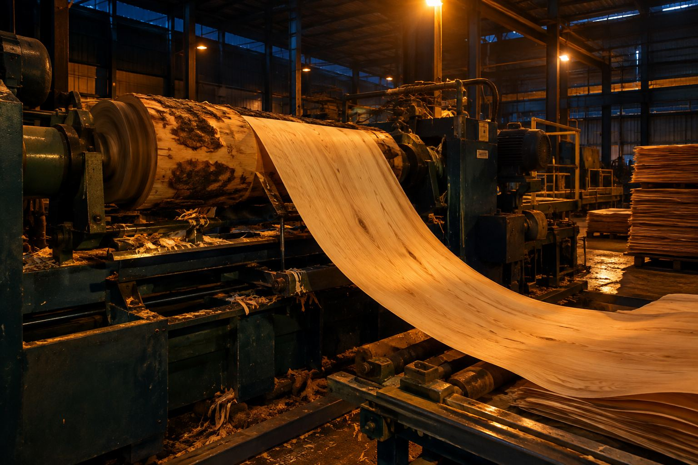
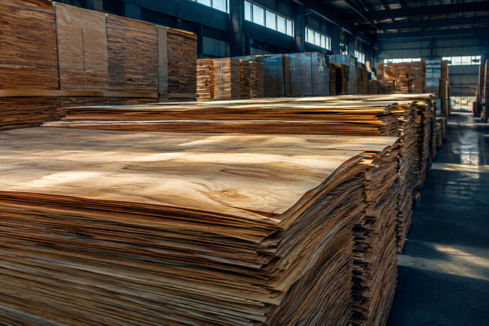
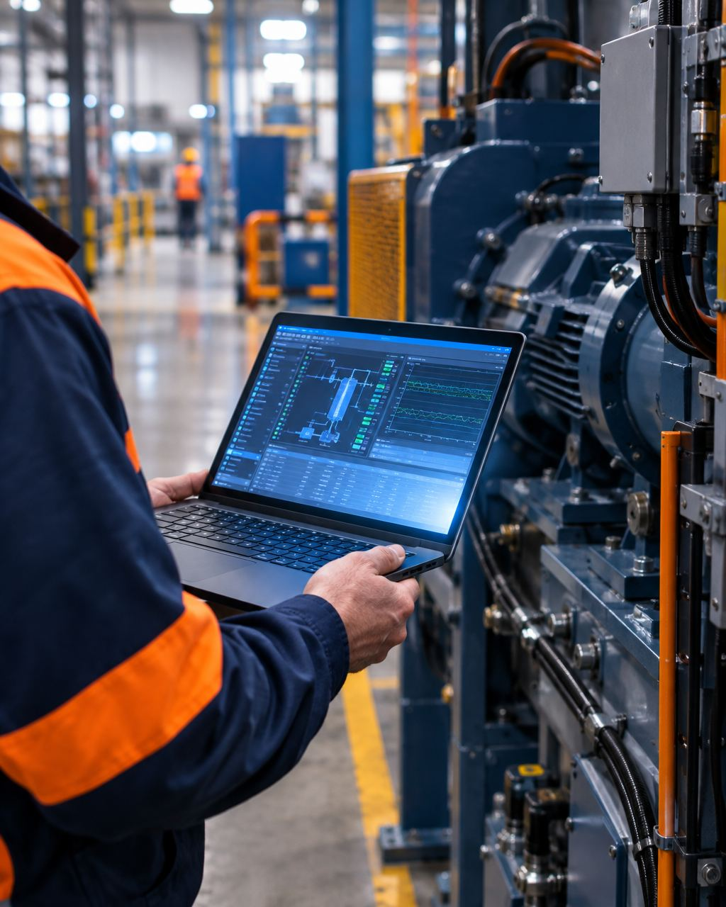

Coleta de dados de CLP
Um gateway no painel lê as variáveis da máquina em tempo real, sem alterar o programa.
- Somente leitura
- S7, ADS, EtherNet/IP
- Gateway Linux
Saiba por que sua máquina parou, antes que a parada vire prejuízo.

Lemos o CLP que você já tem e mostramos produção, paradas e OEE por turno, sem trocar a máquina.
Diagnóstico técnico gratuito: 30 minutos com um engenheiro.
Solicitar diagnósticoA parada é anotada à mão, atrasada e sem causa. Nós levamos o dado do CLP ao celular de quem decide.
Quem somos. Engenharia de automação com 15 anos de chão de fábrica, 60 comissionamentos no exterior e registro no CREA-SC, com ART em cada projeto.
O que fazemos. Coleta de dados de CLP, supervisórios web, programação de CLP e IHM, retrofit de máquinas, visão computacional e partida em campo.
Onde estamos. Em Caçador, no polo madeireiro de Santa Catarina. Atendemos todo o Brasil remotamente e viajamos para comissionar onde a máquina estiver.
Como falar. WhatsApp (49) 99120-8836 ou contato@conectaot.com.br. Respondemos em até um dia útil.
Programamos e modernizamos a máquina quando é preciso, e tiramos os dados dela quando o objetivo é enxergar a produção.
Ver como funcionaUm gateway no painel lê as variáveis da máquina em tempo real, sem alterar o programa.
Produção, paradas, alarmes e tendências por turno, no navegador e no celular.
Máquinas novas, melhorias de processo e lógica de segurança, com sequenciadores documentados.
Troca de controladores sem peça de reposição, incluindo migração de TIA Portal para TwinCAT 3.
Câmera sobre o processo para contar peças e apontar defeitos antes que sigam adiante.
O CLP fala em centenas de variáveis. O gateway ConectaOT escolhe as que importam, organiza e entrega um painel que qualquer gestor entende.
Centenas de tags do CLP, lidas sem escrever nada na máquina.
O gateway filtra, carimba o horário e guarda o histórico.
Produção, paradas e OEE organizados por turno no painel.
Arraste com os números da sua linha. A conta roda aqui no navegador e nada é enviado.
de produção perdida por mês.
8.800 peças deixam de sair da máquina por mês. Saber a causa de cada parada é o primeiro passo para recuperar parte disso.
Solicitar diagnósticoEntregues em compensados, laminação, florestal e equipamentos de teste. Clientes preservados por sigilo; as fotos mostram o tipo de ambiente onde trabalhamos.
Supervisório com Siemens S7-1214C, banco de dados e painel web com temperatura, ciclos e histórico.
CODESYS com alarmes, histórico e níveis de usuário.
Execução e registro de ensaios com acompanhamento das grandezas.


A coleta é somente leitura. O painel mostra o que a máquina faz, mas não envia comando nenhum. Se o gateway desligar, a máquina segue produzindo; só o painel para de atualizar.
Uma coleta de dados em uma máquina costuma levar poucos dias. Retrofit e automação completa têm cronograma definido no projeto, por escrito.
Sim. Trabalhamos com Siemens, Beckhoff, Rockwell, Schneider, Delta e CODESYS, incluindo modelos descontinuados. A compatibilidade é confirmada no diagnóstico.
A coleta normalmente é instalada sem parar a linha. Retrofits são feitos em janela combinada com a produção.
A coleta é somente leitura e não envia comandos ao CLP. Se o gateway desligar, a máquina segue funcionando normalmente.
Depende do número de máquinas e do escopo. Depois do diagnóstico gratuito você recebe escopo, prazo e valor fechados por escrito.
Treinamento e ajustes pós-partida estão incluídos. Depois o suporte segue remoto ou presencial, conforme a planta precisar.
Diagnóstico técnico gratuito: em 30 minutos um engenheiro avalia o seu CLP e indica o caminho. Sem custo e sem compromisso.